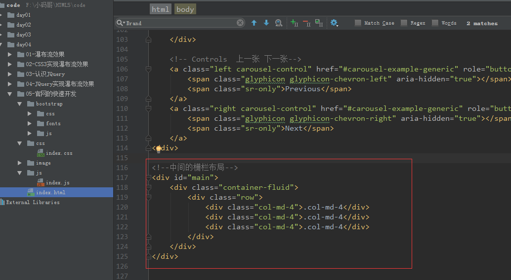

随着HTML5规范的不断发展，围绕着这一生态出现了非常很多实用的框架，极大的提高了我们的开发效率，常见的框架代表有：UI层面的有Bootstrap、Yui、JqueryUI、CSS3Lib等，JS层面的有JQuery、Zeptojs、Angularjs、React、Vuejs等，还有很多常用的动画库、字体图标，比如：Animate、Wow、Iconfont、Iconmoon等。
这些前端框架典型的特点：简单易用、相通性强，我们可以在学习一个框架后快速上手其他框架。
主要知识点：Animate、WOW.js、 scrollReveal.js、Zepto.js、Bootstrap、 jQuery 等
醉牛前端 , 收集前端常用的工具集合：picadate, chat :
官方演示: https://daneden.github.io/animate.css/
官网： https://daneden.github.io/animate.css/
github: https://github.com/daneden/animate.css
animated: 动画公共的样式
shake ： 动画的特殊样式
infinite [ˈɪnfɪnət] 循环
重写框架中的动画样式
调用window.location.reload() 函数
在合成动画之前删除之前的动画

官网：http://mynameismatthieu.com/WOW/
github: https://github.com/matthieua/WOW
1 核心作用：让页面滚动更有趣
通过WOW.js，可以在页面逐渐向下滚动的过程中逐渐释放这些动画效果。也就是说：当我们向下滚动页面时，可以省去很多判断条件，让CSS动画逐渐展示出来。
2 特点
轻量级类库， 不依赖jQuery，超简单的安装和使用，与animate.css配合，只需要短短几行代码就可以实现很多特效。容易定制，我们可以改变动画去设置喜欢的风格、延迟、长度、偏移和迭代等等。
3 兼容性考虑
因为，WOW要和Animate配合使用，所有其也只兼容支持CSS3 animate属性的浏览器：IE10+、Firefox、Chrome、Opera、Safari。
1.基本的布局
2.布局添加样式

执行效果：

data-wow-delay: 动画开始前延迟
data-wow-duration: 动画持续时长
data-wow-iteration: 动画重复次数
data-wow-offset: 浏览器底部到指定item的顶部的距离（偏移量）
来搞定它? 可以加入data-wow-duration（动画持续时间）和data-wow-delay（动画延迟时间）等属性。比如：
<div class="wow slideInLeft" data-wow-duration="3s" data-wow-delay="1s"></div>
<div class="wow slideInRight" data-wow-iteration="5"></div>
<div class="wow slideInRight" data-wow-offset="400"></div>
data-wow-offset：用于决定当前的元素在滚动的时候 , 到达怎样的位置出现（是在滚动之前出现、滚动之后出现，还是滚动的时候出现）http://mynameismatthieu.com/WOW/
1.图解
2.布局代码
3.js代码
var wow = new WOW({
boxClass: 'wow', // 指定执行动画标签（元素）上的CSS类（默认类名wow）
animateClass:'animated', // 动画CSS类 （默认类名animated）
offset: 0, // 距离可视区域多少开始执行动画（默认为0）
mobile: true, // 是否在移动设备上执行动画 （默认是true）
});
wow.init();
WOW.js实例的动画只能加载一次，如果要重新执行动画必须要进行刷新。
但是在实际开发中，更多时候动画是只加载一次，否则会造成视觉错乱。那如果要多次重复展现动画该如何处理呢？

scrollReveal是一个兼容PC端和移动设备的滚动-动画库。也是在页面逐渐向下滚动的过程中逐渐释放这些动画效果 ，与WOW.js 不同的是 : WOW.js 的动画只播放一次，而 scrollReveal.js 的动画可以配置播放一次或无限次;
1 特点
scrollReveal同时兼容PC端和移动端；
0依赖（不依赖于jQuery，也不依赖于animate.css）;
定制性高，使用简单方便快捷。
2 浏览器兼容
虽然scrollReveal.js不依赖于animate.css，但是它的动画也是用CSS3创建的，所以依然需要支持HTML5和CSS3比较好的浏览器，比如： IE10+、Firefox、Chrome、Opera、Safari。
官网：https://scrollrevealjs.org/
github: https://github.com/jlmakes/scrollreveal
对应的代码
<!DOCTYPE html>
<html lang="en">
<head>
<meta charset="UTF-8">
<title>Title</title>
<style>
*{
margin: 0;
padding: 0;
}
#main {
width: 800px;
margin: 20px auto;
/*background-color: skyblue;*/
list-style: none;
}
#main .box{
width: 200px;
height: 300px;
background-color: skyblue;
float: left;
margin: 10px;
display: flex;
justify-content: center;
align-items: center;
}
</style>
</head>
<body>
<ul id="main">
<li class="box">1</li>
<li class="box">2</li>
<li class="box">3</li>
.........
<li class="box">30</li>
</ul>
</script>
</body>
</html>
sr.reveal('.box') // 让选中的标签box展开（执行）动画
var config = {
reset: false, // 滚动鼠标时，动画开关（如果为true, 动画可以执行n次）
origin: 'bottom', // 动画开始的方向
duration: 500, // 动画持续时间
delay: 0, // 延迟
rotate: {x:60, y:-60, z:60}, // 过度到0的初始角度
opacity: 0, // 初始透明度
scale: 0.9, //缩放
easing: 'cubic-bezier(0.1, 0.2, 0.3, 0.4)', // 动画效果'ease', 'ease-in-out'，'linear'...
// 回调函数
//展开动画开始前调用
beforeReveal: function(domEl){},
//滚动鼠标之前调用
beforeReset: function(domEl){},
//展开动画开始后调用
afterReveal: function(domEl){},
//滚动鼠标之后调用
afterReset: function(domEl){}
};
window.sr = ScrollReveal();
sr.reveal('.sr', config);

效果：
1.实现重复动画
2.指定某个盒子进行动画
1.选中某个盒子
2.给某个盒子设计动画
window.onload=function () {
var config = {
reset: true,
// rotate: {x:50, y:70, z:50}, // 过度到0的初始角度
};
var config1 = {
reset: true,
rotate: {x:0, y:0, z:90}, // 过度到0的初始角度
scale: 2,
duration: 1500, // 动画持续时间
};
//1.拿到ScrollReveal对象
window.sr= ScrollReveal();
//2.开始动画
sr.reveal('.box',config);
//3.开始动画
sr.reveal('#test12',config1);
}
结论：想给哪个标签执行动画，先拿到该标签，然后给标签开始动画
1 什么是bootstrap?
bootstrap是当下最流行的前端框架（界面工具集);
特点是灵活简单、代码优雅、美观大方；
目的在于让web开发更加迅速、敏捷；
由Twitter公司的两名前端工程师Mark Otto和Jacob Thornton在2011年发起的，并利用业余时间完成了第一个版本的开发。
2 什么是框架？
库 lib library
写的更少做的更多 提供一套较为便捷的操作方式；
将一套功能体系封装到一个单独的文件中的东西；
Bootstrap提供一套前端需要的界面工具集合。
3 为什么使用Bootstarp？
注意:
- 使用 Bootstrap 并不代表不用写 CSS 样式，而是不用写绝大多数大家都会用到的样式
- Bootstrap 不是 BootStrap！这是一个词，不是合成词，其含义为：n. 引导指令,引导程序
github 地址： https://github.com/twbs/bootstrap
Boostrap 依赖 Jquery
组件：button , button -group , input , progress , 字体图标
使用bootstrap 与 Jquery 框架技术 ;
其中boostrap 依赖 Jquery
1.配置 : 网页的宽等于设备的宽
2.初始化网页的缩放比例为 1
参考：
http://v3.bootcss.com/getting-started/#template
bootstrap官网：http://v3.bootcss.com/
<!--导航条-->
<nav class="navbar navbar-default">
<div class="container-fluid">
<!-- Brand and toggle get grouped for better mobile display -->
<div class="navbar-header">
<button type="button" class="navbar-toggle collapsed" data-toggle="collapse" data-target="#bs-example-navbar-collapse-1" aria-expanded="false">
<span class="sr-only">Toggle navigation</span>
<span class="icon-bar"></span>
<span class="icon-bar"></span>
<span class="icon-bar"></span>
</button>
<a class="navbar-brand" href="#">广州小码哥教育</a>
</div>
<!-- Collect the nav links, forms, and other content for toggling -->
<div class="collapse navbar-collapse" id="bs-example-navbar-collapse-1">
<ul class="nav navbar-nav">
<li class="active"><a href="#">简介 <span class="sr-only">(current)</span></a></li>
<li><a href="#">综述</a></li>
<li class="dropdown">
<a href="#" class="dropdown-toggle" data-toggle="dropdown" role="button" aria-haspopup="true" aria-expanded="false">学院 <span class="caret"></span></a>
<ul class="dropdown-menu">
<li><a href="#">IOS</a></li>
<li role="separator" class="divider"></li>
<li><a href="#">Java</a></li>
<li role="separator" class="divider"></li>
<li><a href="#">Android</a></li>
<li role="separator" class="divider"></li>
<li><a href="#">UI</a></li>
<li role="separator" class="divider"></li>
<li><a href="#">HTML5</a></li>
</ul>
</li>
<li><a href="#">关于</a></li>
<li><a href="#">社区</a></li>
<li><a href="#">服务</a></li>
</ul>
</div><!-- /.navbar-collapse -->
</div><!-- /.container-fluid -->
</nav>
添加 .navbar-fixed-top 类可以让导航条固定在浏览器的顶部
注意:固定的导航条会遮住页面上的其他的内容，可给<body> 设计padding
导航条包含一个.container 或者.container-fluid容器，从而让导航条居中显示或者自适应显示
添加.navbar-inverse 可以改变导航栏显示的背景颜色
参考：http://v3.bootcss.com/javascript/#carousel
index.html实现头部轮播图：
<!--广告轮播图-->
<div id="carousel-example-generic" class="carousel slide" data-ride="carousel">
<!-- Indicators 下面圆点 -->
<ol class="carousel-indicators">
<li data-target="#carousel-example-generic" data-slide-to="0" class="active"></li>
<li data-target="#carousel-example-generic" data-slide-to="1"></li>
<li data-target="#carousel-example-generic" data-slide-to="2"></li>
</ol>
<!-- Wrapper for slides 中间滚动的内容 -->
<div class="carousel-inner" role="listbox">
<div class="item active">
<img src="image/nav_01.jpg" alt="...">
<div class="carousel-caption">
Hello Word !
</div>
</div>
<div class="item">
<img src="image/nav_02.jpg" alt="...">
<div class="carousel-caption">
</div>
</div>
<div class="item">
<img src="image/nav_03.jpg" alt="...">
<div class="carousel-caption">
</div>
</div>
</div>
<!-- Controls 上一张 下一张-->
<a class="left carousel-control" href="#carousel-example-generic" role="button" data-slide="prev">
<span class="glyphicon glyphicon-chevron-left" aria-hidden="true"></span>
<span class="sr-only">Previous</span>
</a>
<a class="right carousel-control" href="#carousel-example-generic" role="button" data-slide="next">
<span class="glyphicon glyphicon-chevron-right" aria-hidden="true"></span>
<span class="sr-only">Next</span>
</a>
</div>
index.css设计样式：
body{
padding-top: 50px;
}

参考：http://v3.bootcss.com/css/#grid

该布局代码：
<!--中间的栅栏布局-->
<div id="main">
<div class="container-fluid">
<div class="row">
<div class="col-md-4">.col-md-4</div>
<div class="col-md-4">.col-md-4</div>
<div class="col-md-4">.col-md-4</div>
</div>
</div>
</div>
<!--中间的栅栏布局-->
<div id="main">
<div class="container-fluid">
<div class="row">
<div class="col-md-4">
<img src="image/apple-logo.png" alt="">
<h2>iOS学院</h2>
<p>iOS学院,又称大神学院,学院的每一个学生都十分的牛逼,他们的梦想是用"指尖改变世界",励志做"中国的乔布斯"。</p>
<button>立即咨询</button>
</div>
<div class="col-md-4">
<img src="image/android.png" alt="">
<h2>Android学院</h2>
<p>Android学院,学院的每一个学生都很牛逼,他们的梦想是通过代码改变自己,终极目标:"瞬间高富帅,赢取白富美"。</p>
<button>立即咨询</button>
</div>
<div class="col-md-4">
<img src="image/web.png" alt="">
<h2>网页UI学院</h2>
<p>iOS学院,又称大神学院,学院的每一个学生都十分的牛逼,他们的梦想是用"指尖改变世界",励志做"中国的乔布斯"。</p>
<button>立即咨询</button>
</div>
</div>
</div>
</div>
img 使用 class=”img-circle” 样式
<!--中间的栅栏布局-->
<div id="main">
<div class="container-fluid">
<div class="row">
<div class="col-md-4">
<img class="img-circle" src="image/apple-logo.png" alt="" >
...
</div>
...
...
</div>
</div>
</div>
body{
padding-top: 50px;
}
#main{
padding: 20px;
}
/*图片大小*/
#main .container-fluid .row .col-md-4 img{
width: 180px;
}
/*水平居中*/
#main .container-fluid .row .col-md-4{
text-align: center;
/*下边距*/
margin-bottom: 20px;
}
/*字体样式*/
#main .container-fluid .row .col-md-4 p {
/*字体对齐方式*/
text-align: left;
/*首行缩进*/
text-indent: 8%;
}
设计button的样式
参考：http://v3.bootcss.com/javascript/#tabs
该布局代码：
<!--底部的tabBar-->
<div id="tabBar">
<!-- Nav tabs -->
<ul class="nav nav-tabs" role="tablist">
<li role="presentation" class="active"><a href="#iOS" aria-controls="home" role="tab" data-toggle="tab">iOS</a></li>
<li role="presentation"><a href="#Android" aria-controls="profile" role="tab" data-toggle="tab">Android</a></li>
<li role="presentation"><a href="#UI" aria-controls="messages" role="tab" data-toggle="tab">UI</a></li>
</ul>
<!-- Tab panes -->
<div class="tab-content">
<div role="tabpanel" class="tab-pane active" id="iOS">iOS</div>
<div role="tabpanel" class="tab-pane" id="Android">Android</div>
<div role="tabpanel" class="tab-pane" id="UI">UI</div>
</div>
</div>
参考：http://v3.bootcss.com/css/#grid
该布局的代码：
<!--底部的tabBar-->
<div id="tabBar">
<!-- Nav tabs -->
...
...
...
<!-- Tab panes -->
<div class="tab-content">
<div role="tabpanel" class="tab-pane active" id="iOS">
<div class="row">
<div class="col-md-8">.col-md-8</div>
<div class="col-md-4">.col-md-4</div>
</div>
</div>
<div role="tabpanel" class="tab-pane" id="Android">
<div class="row">
<div class="col-md-4">.col-md-4</div>
<div class="col-md-8">.col-md-8</div>
</div>
</div>
<div role="tabpanel" class="tab-pane" id="UI">
<div class="row">
<div class="col-md-8">.col-md-8</div>
<div class="col-md-4">.col-md-4</div>
</div>
</div>
</div>
</div>
该布局对应的代码：
<!--底部的tabBar-->
<div id="tabBar">
<!-- Nav tabs -->
...
...
...
<!-- Tab panes -->
<div class="tab-content">
<div role="tabpanel" class="tab-pane active" id="iOS">
<div class="row">
<div class="col-md-8">
<h2>iOS学院 <span>史上最具逼格</span> </h2>
<p>iOS学院，又称大神学院，学院内优秀学员比比皆是,不断挑战着业界薪资神话。学院的每一个学生都十分的牛逼,他们的梦想是用"指尖改变世界",励志做"中国的乔布斯"。</p>
</div>
<div class="col-md-4">
<img src="image/safari-logo.jpg" alt="">
</div>
</div>
</div>
<div role="tabpanel" class="tab-pane" id="Android">
<div class="row">
<div class="col-md-4">
<img src="image/firefox-logo.jpg" alt="">
</div>
<div class="col-md-8">
<h2>Android学院 <span>史上最具逼格</span> </h2>
<p>Android学院,学院的每一个学生都很牛逼,他们的梦想是通过代码改变自己,终极目标:"瞬间高富帅,赢取白富美"。</p>
</div>
</div>
</div>
<div role="tabpanel" class="tab-pane" id="UI">
<div class="row">
<div class="col-md-8">
<h2>网页UI学院<span>史上最具逼格</span> </h2>
<p>网页UI学院,又称女神学院。学院每个学生的梦想是:设计出能改变世界的UI界面,成为其他两大学院男生心目中的女神。</p>
</div>
<div class="col-md-4">
<img src="image/ie-logo.jpg" alt="">
</div>
</div>
</div>
</div>
</div>
1.图片自适应大小：
2.设计字体样式
/*字体距离顶部*/
#tabBar .tab-content .tab-pane .row .col-md-8 {
margin-top: 100px;
}
/*h2 字体颜色*/
#tabBar .tab-content .tab-pane .row .col-md-8 h2{
color: red;
}
/*span 字体颜色和大小*/
#tabBar .tab-content .tab-pane .row .col-md-8 h2 span{
color: purple;
font-size: 20px;
}
3.设计字体自适应大小
4.自适应布局
/*自适应布局*/
@media screen and (max-width: 650px) {
/**字体距离顶部*/
#tabBar .tab-content .tab-pane .row .col-md-8 {
margin-top: 40px;
}
}
<!--分解线-->
<hr>
<!--尾部-->
<footer>
<!--左浮动-->
<p class="pull-left">© 2015 广州小码哥教育集团</p>
<!--右浮动-->
<a class="pull-right" target="_top"> 回到顶部</a>
</footer>